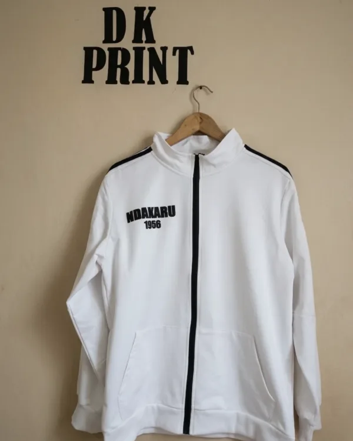
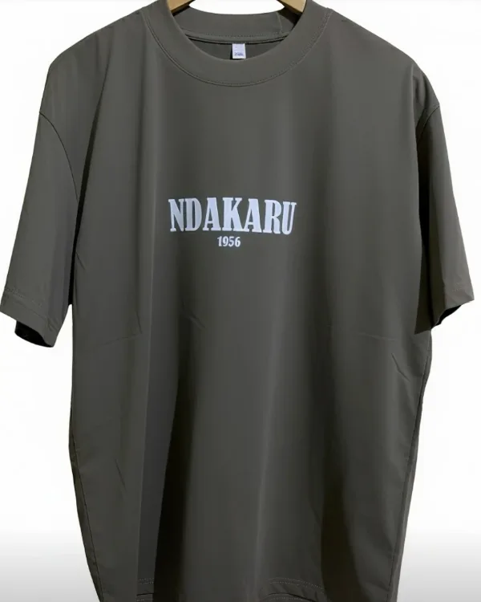
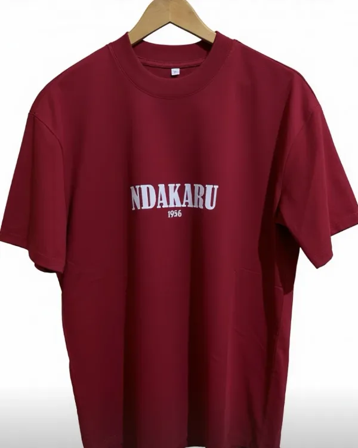
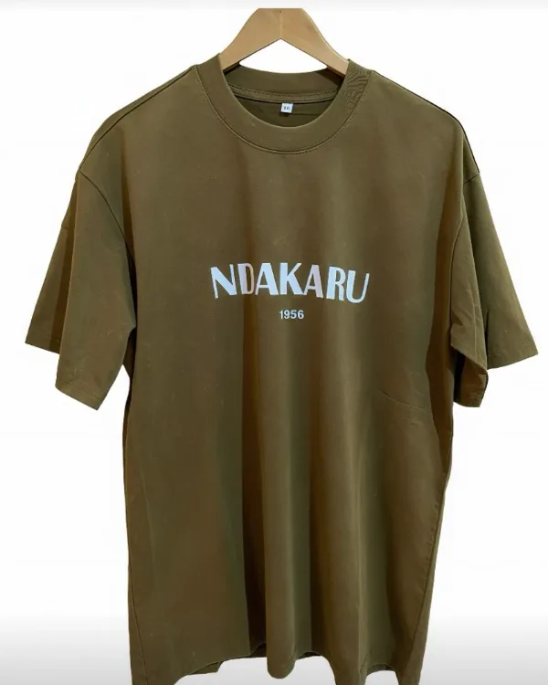

Tenues d’équipe et de club
Maillots, survêtements et t-shirts floqués aux couleurs du club, avec les noms et les numéros de chaque joueur.
DK Print habille vos équipes, vos clubs et vos événements. T-shirts, polos, sweats et casquettes, personnalisés par transfert à chaud dans notre atelier de Keur Massar, à partir d’une seule pièce et en 2 à 3 jours.
Les prix baissent automatiquement avec la quantité : 10 % dès 10 pièces, 20 % dès 50 pièces. Voir le détail des paliers.
Maillots, survêtements et t-shirts floqués aux couleurs du club, avec les noms et les numéros de chaque joueur.
Polos et t-shirts au logo de votre entreprise, pour vos équipes d’accueil, de chantier, de livraison ou de service.
Séminaires, campagnes, tournois, mariages, associations : des séries personnalisées livrées dans les délais de votre événement.
Un cadeau, un anniversaire, une idée à imprimer une seule fois. Nous travaillons aussi à l’unité, sans quantité minimum.
Parcourez le catalogue : produit, taille, couleur et prix selon la quantité.
Sur WhatsApp, avec votre logo ou le texte à floquer. Nous vous disons tout de suite si le fichier est exploitable.
Vous recevez le prix définitif et un aperçu du rendu. Rien n’est lancé avant votre accord.
Retrait à l’atelier ou livraison à Dakar et en régions.
Quelques commandes sorties de l’atelier, pour la collection Ndakaru 1956.

Veste de survêtement
T-shirt gris
T-shirt bordeaux
T-shirt kakiComptez 2 à 3 jours pour une commande courante. Les grosses séries et les périodes chargées demandent un peu plus de temps : le délai exact vous est confirmé avec le devis. Pour un événement à date fixe, prévenez-nous dès le départ.
Non. Nous travaillons à partir d’une seule pièce. Les remises, elles, commencent à 10 pièces.
Un PNG à fond transparent, un PDF ou un fichier vectoriel donnent le meilleur résultat. Une image nette d’au moins 1 500 pixels de large convient également. Évitez les captures d’écran et les images récupérées sur les réseaux sociaux : elles sont trop petites pour un flocage net. En cas de doute, envoyez-nous votre fichier, nous vous dirons ce qu’il vaut.
Oui, à condition de laver le vêtement à l’envers, à 30 °C, sans sèche-linge, et de ne jamais repasser directement sur le motif. Dans ces conditions, le flocage tient toute la vie du textile.
Oui. Les tailles se mélangent librement dans une même commande sans faire perdre la remise. Pour les couleurs, la remise s’applique par produit : dix t-shirts de trois couleurs différentes restent dix t-shirts.
Un acompte de 50 % est demandé à la commande, le solde au retrait ou à la livraison. Les modalités acceptées vous sont précisées sur WhatsApp au moment du devis.
Le plus rapide : envoyez-nous votre projet, nous répondons avec un devis.
+221 77 123 63 67
Écrire sur WhatsAppKeur Massar, Dakar
Ouvert 24h/24
Passez nous voir pour toucher les textiles et juger des couleurs avant de commander.